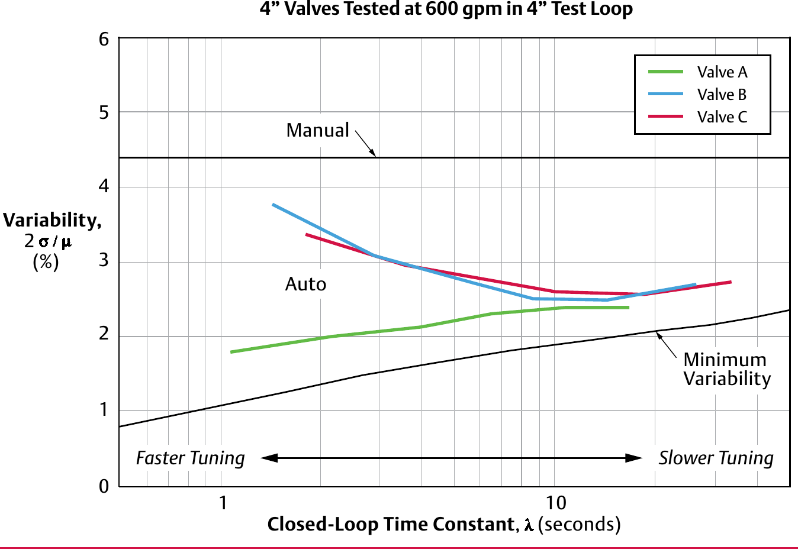

The Economic Case for a Better Valve

Replacing the poorer-performing Valve B with Valve A at a 2.0-second closed-loop time constant measures out to a 1.4% improvement in process variability — a real, quantified economic argument, not just "this one seems better."
After Control Valve Handbook, 6th ed., Fig. 2.7 — used directly. Component Index: cvh-cmp-closed-loop-disturbance-summary.